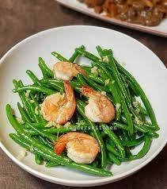

1.Tumis buncis udang

- Bahan :
- - 1 buah labu siam sedang, potong kotak
- - 5 kacang panjang
- - 1 buah jagung
- - 1 genggam kulit melinjo
- - 1 genggam tauge kedelai
- - 2 lembar daun salam
- - 1 inci lengkuas, geprek
- - 1 sdt asam Jawa
- Air secukupnya
- Bumbu halus
- - 3 siung bawang putih
- - 4 siung bawang merah
- - 4 cabai merah
- - 2 buah kemiri
- - 1 sdt terasi
- - Cara membuat:
- Rebus air sampai mendidih, masukkan jagung, dan rebus sebentar. Kemudian masukkan sayuran lainnya.
- Masak sayuran hingga setengah matang, kemudian masukkan bumbu halus, lengkuas, daun salam, garam, dan penyedap.
- Masak sayur hingga matang, kemudian sajikan.